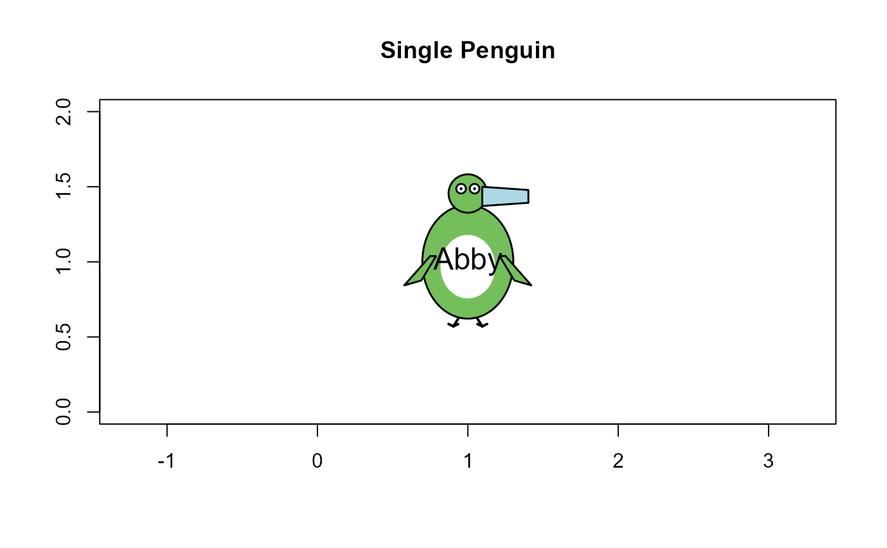
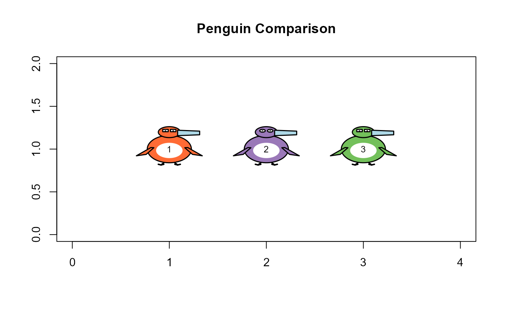
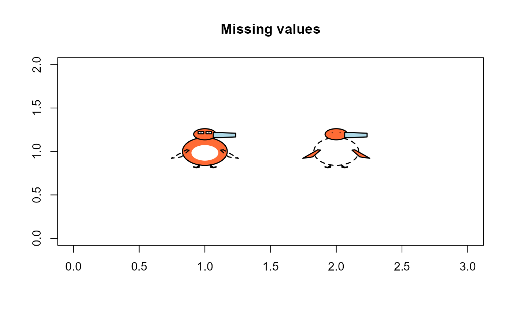

Draws a schematic penguin at specified coordinates with customizable features that represent different measurements. The visual encoding maps:
Usage
draw_penguin(
x,
y,
bill_len_scale = 1,
bill_dep_scale = 1,
flipper_scale = 1,
body_scale = 1,
species = "Adelie",
sex = "male",
id = NULL,
size = 0.6,
col = penguin_colors(),
lwd = 1.5,
cex.lab = 0.8
)Arguments
- x
X coordinate for center of penguin
- y
Y coordinate for center of penguin
- bill_len_scale
Scale factor for bill length (default 1)
- bill_dep_scale
Scale factor for bill depth (default 1)
- flipper_scale
Scale factor for flipper length (default 1)
- body_scale
Scale factor for body size (default 1)
- species
Species name affecting color: "Adelie", "Chinstrap", or "Gentoo"
- sex
Sex affecting eye shape: "male" or "female"
- id
Optional identifier to display in the penguin's body
- size
Height of the glyph in inches, for a penguin with all scale factors equal to 1 (default 0.6)
- col
Named vector of body colors, with species as names. See
penguin_colors().- lwd
Line width for the glyph outlines
- cex.lab
Character expansion for the
idlabel (default 0.8)
Details
Bill length -> horizontal extent of the bill
Bill depth -> vertical thickness of the bill
Flipper length -> length of the flippers
Body mass -> overall body size
Species -> body color (Adelie=orange, Chinstrap=purple, Gentoo=green)
Sex -> eye shape (angular for males, round for females)
This function should be called within an existing plot. It uses base R graphics.
The glyph is centered at the data coordinates (x, y), but is sized in inches rather
than in the units of the axes. It therefore has the same shape and size in any plot,
whatever the aspect ratio or the ranges of the axes, in the same way as a plotting symbol.
A scale factor that is NA is drawn at the neutral value of 1, with the corresponding
part of the glyph shown as an unfilled, dashed outline. If sex is NA, the eyes are
drawn as pupils only.
See also
penguin_points() to add glyphs for the rows of a data frame to a plot;
penguin_glyphs() for a grid display.
Examples
# Create a plot area and draw a single penguin
plot(1, xlim=c(0,2), ylim=c(0,2), type="n", asp=1,
xlab="", ylab="", main="Single Penguin")
draw_penguin(1, 1, bill_len_scale=1.2, body_scale=1.4,
species="Gentoo", sex="female", size = 2,
id = "Abby", cex.lab = 1.5)

# Draw multiple penguins with different characteristics
plot(1, xlim=c(0,4), ylim=c(0,2), type="n",
xlab="", ylab="", main="Penguin Comparison")
draw_penguin(1, 1, species="Adelie", sex="male", id="1", size = 1)
draw_penguin(2, 1, species="Chinstrap", sex="female", id="2", size = 1)
draw_penguin(3, 1, species="Gentoo", sex="male", id="3", size = 1)

# Missing measurements are shown as dashed outlines
plot(1, xlim=c(0,3), ylim=c(0,2), type="n",
xlab="", ylab="", main="Missing values")
draw_penguin(1, 1, flipper_scale = NA, size = 1)
draw_penguin(2, 1, body_scale = NA, sex = NA, size = 1)
